제주담다와 함께 제주의 특별한 맛을 담아보세요!
지역별 맛집 찾아보기
지역별로 제주시 내 맛집을
찾아보아요!
제주시내
연동, 노형, 이도, 삼도 등애월
곽지, 한담, 협재 포함한림
협재해수욕장, 금능해변 인근서귀포시내
서귀동, 동홍동 등중문
중문관광단지, 색달 포함안덕
산방산, 화순, 대평 포함남원
표선 포함성산
섭지코지, 성산일출봉 인근표선
해비치, 해변 카페 거리 등구좌
세화, 월정리, 평대 등 핫한 해변 라인조천
함덕, 신촌, 김녕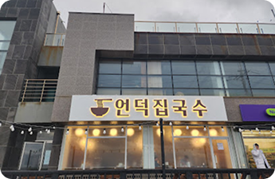
언덕집국수
애월 고기 국수 맛집
자매국수
제주시 대중적인 고기국수 맛집
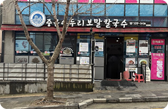
중문수두리보말칼국수
구좌읍 전복돌솥밥 맛집
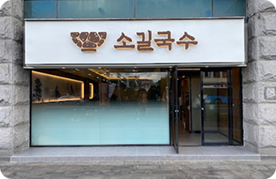
소길국수
제주공항 근처 고기국수 맛집
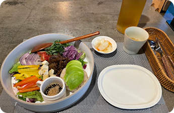
제주 베지스
한경면 비건 레스토랑
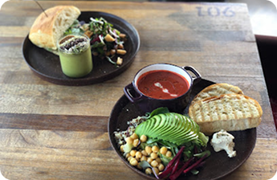
제주901, 카페
제주 노형 맛있는 비건 카페
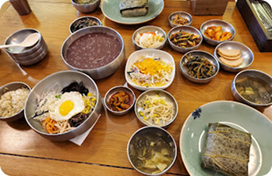
채식식당 푸른솔맑은향
노형동 비건 식당
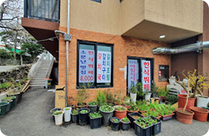
작은부엌
조천읍 채식 전문 식당
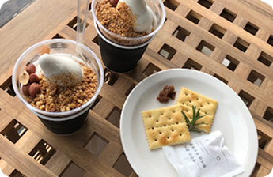
블랑로쉐
제주 우도 바다풍경 감성 커피숍
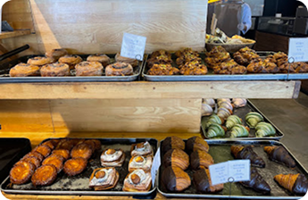
카페 델문도 함덕점
함덕 해주욕상 풍경 좋은 디저트 맛집
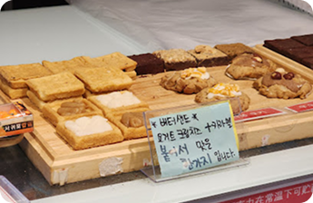
충무상회
제주 동문시장 찰리공장 감성 디저트 전문점
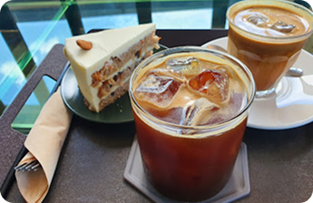
울트라마린
한경면 분위기 좋은 디저트 맛집
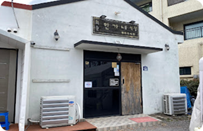
화순한가네식당
서귀포시 가성비 돔베 맛집
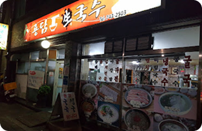
용담생국수
제주시 가성비 고기국수 맛집
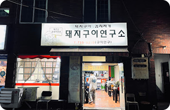
돼지구이연구소
제주시 김치찌개, 제육 가성비 맛집
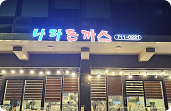
나라돈까스
제주시 돈까스 가성비 맛집
별점 4.5이상, 후기 500개 이상의 찐 맛집만 모아봤어요
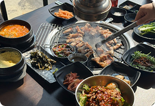
꺼멍식당
서귀포시 특별자치도, 이어도로 338
첫 제주 가족여행으로 오게 되었어요. 숙소 근처에서 흑돼지구이 저녁식사를 하고 싶었는데 마침 딱 가까이 식당이 있어서 방문했는데 분위기도 너무 좋고 고기도 다 맛있게 구워주셔서 너무 편하게 잘 먹었어요
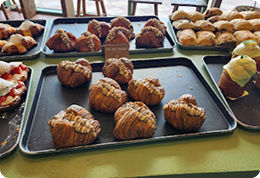
서귀피안 베이커리
서귀포시 성산읍 신양로122번길 17 2F
커피가 정말 고소하고, 원두의 신선도가 높은 것 같습니다. 빵도 종류가 진짜 많고, 엄청 맛있어요. 또한 바닷가가 보이는 뷰 맛집이라서 정말 만족스럽게 쉬다 올수 있는 공간입니다.
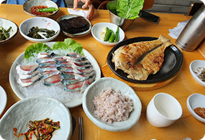
해왓
서귀포시 특별자치도, 성산읍 신고로 30-1
제주도 성산읍에서 깔끔하고 정갈한 식사를 원하신다면 해왓 꼭 추천드려요! 저는 어머니와 동생들과 함께 갈치 조림과 모듬물회를 먹었는데요, 칼치 조림은 정말 간이 딱 맞고 살이 부드러워 밥 한 공기 뚝딱 먹었네요! 모듬물회는 신선한 회가 가득 들어 있고, 육수도 깔끔해서 속까지 시원했어요.…
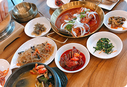
제주로운청해원
서귀포시 특별자치도, 성산읍 신양로 101
갈치조림이 맛있었던 제주로운청해원 성산에서 갈치조림 먹고싶을 때 가기 좋은 곳이에요. 반찬도 다양하게 나오고 갈치조림도 양념이 맛있었어요. 성게미역국이랑 옥돔구이까지 구성이 좋아요. 옥돔구이도 바삭하고 촉촉해서 좋아요. 밥도 솥밥이라 좋습니다.
분위기가 좋은 감성 맛집 리스트
당당
제주시 애월읍 신엄리 1212-1
REVIEW수플레가 정말 부드러워서 좋았습니다! 스프 또한 진해서 부드럽게 넘길 수 있어 만족스러운 식사였습니다
하하호호
제주시 우도면 우도해안길 532
REVIEW친구들과 우도여행 중 방문한 하하호호 햄버거집 예전부터 한번 가보고 싶었던 곳인데 드디어 방문
음식도 맛있고 해안도로 바로옆이라 가게앞 뷰도 미쳤다
다행히 만석은 아니었지만 주문 순서 때문에 캐치테이블 등록 후 입장 음식이 나오기까지는 20분쯤 걸렸다
하찌
서귀포시 호근남로 180
REVIEW몇년만의 제주 여행에서 찾은 맘에든 맛집. 음식이 신선하고 입에 착착 감기는 맛이였어요 정돈된 실내도 아늑하고 사장님이 직접 가꾼다는 꽃나무 정원도 넘 좋았어요 담에 또 들르겠습니다~
몽상
제주시 애월읍 애월로1길 25-4
REVIEW바다보면서 커피마시기 굉장히 좋고 몽상드 프로젝트라고 구역이3개나눠져잇는데 3개다 모두 이쁘고 위치도 아주좋습니다 주차도좋아요 커피는 사람이하도많아서 조금걸리지만 바다보느라 시간가는줄몰라요